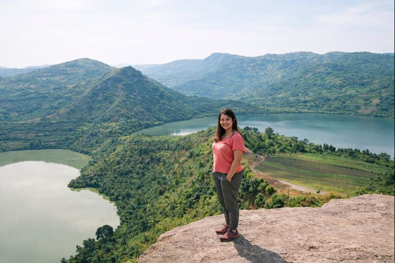

Sud-Ouest
90k
Parc de Bwindi
Forêt impénétrable et trekking des gorilles de montagne

RetourLa Perle de l'Afrique, là où le Nil prend sa source
L'Ouganda, surnommé la "Perle de l'Afrique" par Winston Churchill, est une destination d'une biodiversité époustouflante. C'est ici que se rencontrent la savane est-africaine et la forêt tropicale d'Afrique centrale. Terre d'accueil des gorilles de montagne à Bwindi et des chimpanzés à Kibale, l'Ouganda est aussi le berceau du Nil, dont les eaux bouillonnent aux chutes Murchison. Des cimes enneigées du Rwenzori aux eaux paisibles du lac Bunyonyi, le pays offre une aventure sauvage authentique et une hospitalité sans pareille.
Explorez les 15 merveilles de la Perle de l'Afrique
Forêt impénétrable et trekking des gorilles de montagne

Le point de départ du plus long fleuve du monde et capitale de l'aventure

Là où le Nil se fracasse dans une gorge étroite de 7m

Safari savane célèbre pour ses lions grimpeurs d'arbres à Ishasha

Cimes enneigées et paysages alpins au cœur de l'Afrique

La capitale mondiale des primates et des chimpanzés

Le lac aux 29 îles, lieu de repos paisible et sans hippopotames

Safari sauvage et isolé dans l'une des plus belles savanes d'Afrique

Vue panoramique sur les sept collines de la capitale

Le siège historique du Royaume du Buganda et son histoire fascinante

Archipel de 84 îles tropicales au milieu du lac géant

Ancien volcan avec l'une des plus grandes caldeiras au monde
Le seul endroit en Ouganda pour voir des rhinocéros blancs à pied
Le royaume des zèbres et des impalas, idéal pour les safaris à cheval
Un havre de paix sur les rives du lac Victoria, riche en oiseaux et singes
Une terre de royaumes et de diversité ethnique.
L'Ouganda est une mosaïque culturelle composée de plus de 50 ethnies. Le Royaume du Buganda, le plus puissant, préserve des traditions séculaires. La culture ougandaise s'exprime dans les danses énergiques Kiganda, dans l'art de l'écorce tissée (Bark Cloth) classé à l'UNESCO, et dans une gastronomie généreuse. Pays à forte majorité chrétienne, il vibre aussi au son des percussions et du dynamisme de sa jeunesse urbaine à Kampala.
Une institution royale millénaire qui structure encore la vie sociale et politique du pays.
Tissu ancestral fabriqué à partir d'écorce de figuier, un patrimoine immatériel unique.
Du rythme Kadodi au dynamisme de la pop locale, la musique est l'âme de l'Ouganda.
Réputé comme l'un des peuples les plus accueillants d'Afrique de l'Est.

L'excellence ougandaise entre vos mains. Du café de montagne à l'artisanat éco-responsable.
 Origine
Origine
Café de haute altitude cultivé sur les pentes du Mont Elgon, aux arômes riches et chocolatés.
 Rare
Rare
Objet en tissu d'écorce ancestrale, un matériau durable et chargé d'histoire royale.
 Artisanat
Artisanat
Vannerie fine aux motifs géométriques, réalisée par les coopératives de femmes rurales.
Un thé robuste et parfumé issu des grandes plantations de l'ouest du pays.
Bijou coloré fabriqué à partir de papier recyclé, spécialité de l'artisanat solidaire de Kampala.
Statue représentant la faune locale, taillée dans un bois noble et durable.

Kampala, Centre-ville

Bwindi Impenetrable

Murchison Falls

Makindye, Kampala

Lake Mburo National Park

Kampala, District des Affaires
La cuisine ougandaise est généreuse, utilisant les produits frais des jardins et des lacs. Le Matooke en est le roi incontesté.
Bananes plantains vertes cuites à la vapeur dans leurs feuilles, base de l'alimentation ougandaise.
Street food iconique : une omelette aux légumes roulée dans un chapati chaud.
Ragoût royal de poulet ou bœuf cuit à la vapeur dans une feuille de bananier avec sauce arachide.
Viande grillée (chèvre, bœuf ou porc) servie avec des bananes frites, un délice de rue.
Petit-déjeuner traditionnel mêlant bananes cuites, tripes ou haricots.
Tilapia ou Perche du Nil grillé ou frit, d'une fraîcheur absolue.
Pousses de bambou fumées, spécialité de la région de l'est (Mont Elgon).
Pâte consistante de maïs, servie comme base pour les ragoûts et soupes.
Pâte de millet noir, très appréciée dans le nord et l'ouest du pays.
Beurre de lait clarifié blanc et crémeux, délice du peuple Ankole.
Réputés pour être les plus sucrés et juteux au monde.
Repas rapide et populaire de chapatis coupés mélangés avec des haricots.
L'Ouganda célèbre sa diversité à travers des festivals vibrants et des rendez-vous culturels uniques.
Le plus grand festival de musique électronique et alternative d'Afrique de l'Est (Septembre).
Grand événement caritatif réunissant des milliers de coureurs dans les rues de la capitale.
Célébration pluridisciplinaire des arts et de la culture ougandaise sur l'île de Lunkulu.
La période idéale pour le safari et le trekking des gorilles. Les animaux se rassemblent autour des points d'eau et les pistes sont sèches.
Les paysages sont d'un vert luxuriant. C'est le moment idéal pour l'observation des oiseaux et pour profiter de tarifs plus bas.
L'Ouganda est globalement sûr. Évitez les déplacements nocturnes en dehors des villes et restez informé des conseils locaux.
Vaccin fièvre jaune obligatoire. Prophylaxie antipaludique vivement conseillée. Buvez de l'eau en bouteille uniquement.
Les motos-taxis sont rapides mais demandent de la prudence. Utilisez des applications comme SafeBoda pour plus de sécurité.
Shilling Ougandais (UGX). Le dollar US est accepté pour les permis de gorille et les grands hôtels (billets récents).
Chef Guide Gorilla Trekking
Samuel arpente la forêt de Bwindi depuis 15 ans. Il est le garant d'une rencontre inoubliable avec les primates.
Experte Nil & Aventures
Spécialiste de la région de Jinja, Grace vous fera découvrir la source du Nil sous un angle historique et sportif.
Guide Culturel & Patrimoine
David est passionné par l'histoire du Buganda et les secrets de Kampala. Un conteur exceptionnel.